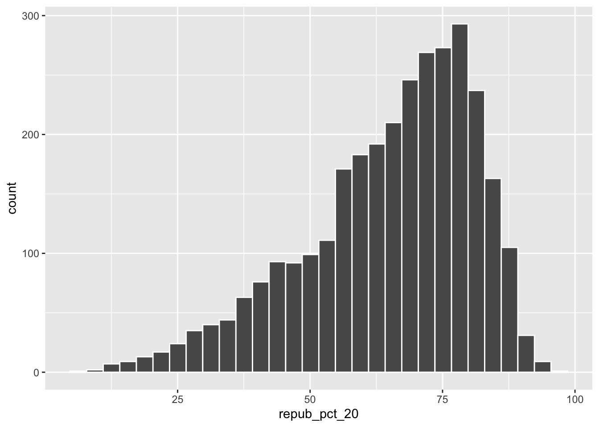
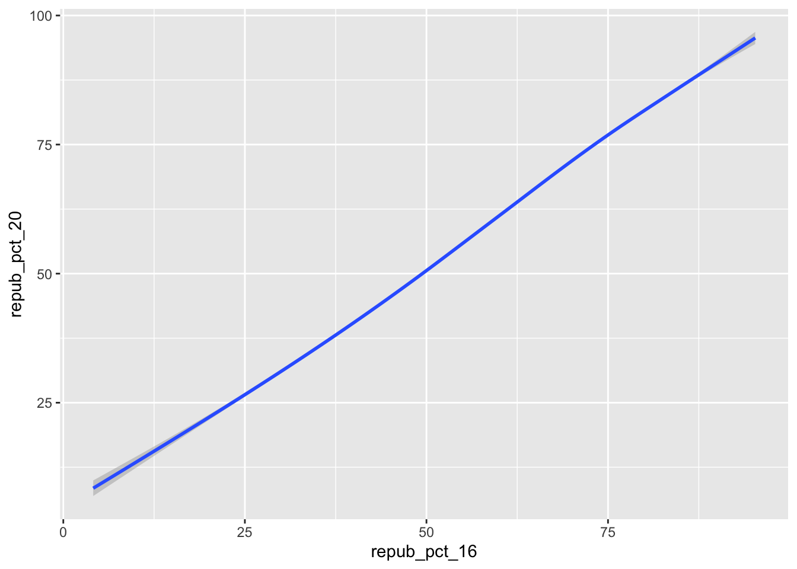
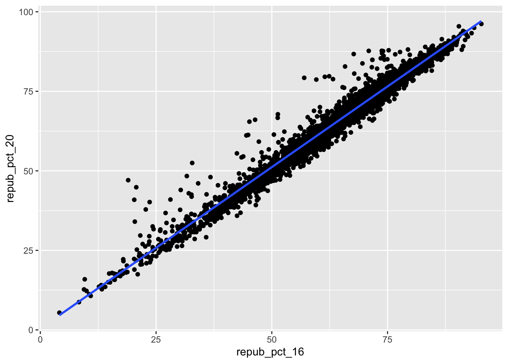
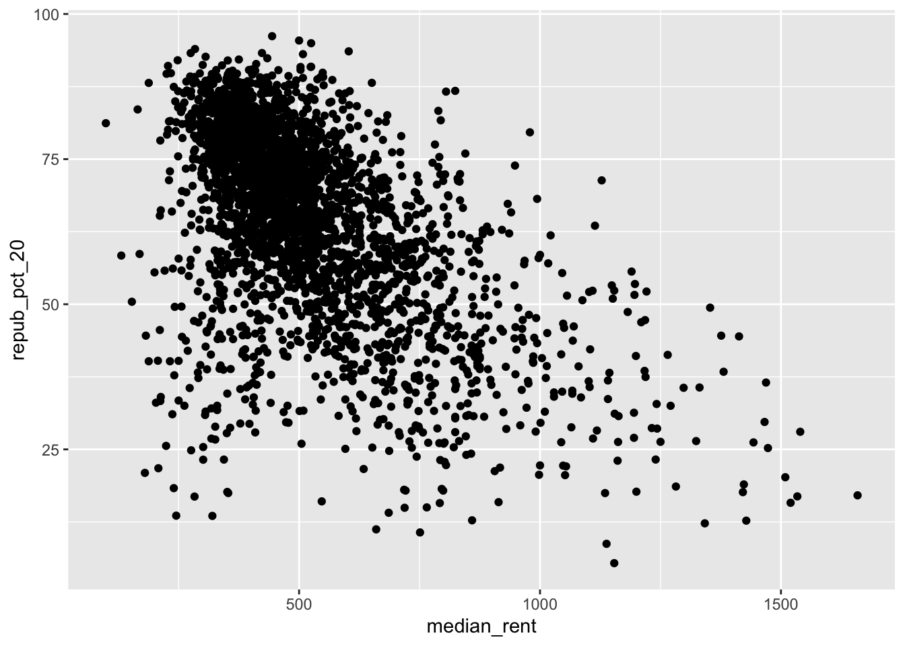
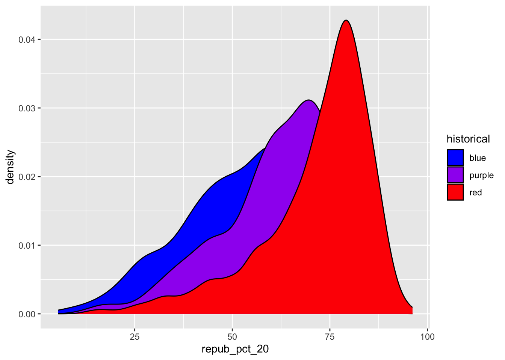
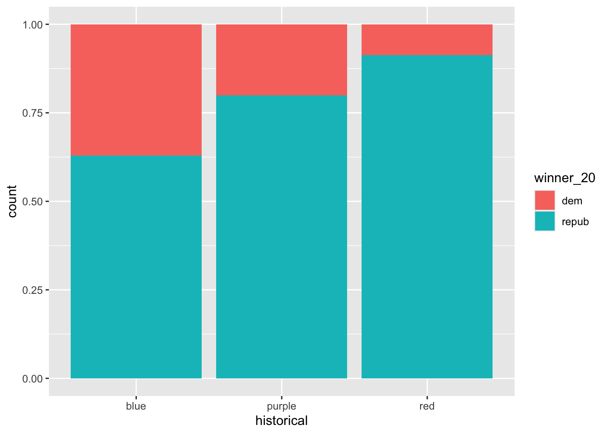

Github user Tony McGovern has compiled and made available 2020/2016/2012 presidential election results for most of 3000+ U.S. counties, except Alaska. (Image: Wikimedia Commons)
A wrangled version of this data, is imported below, after being combined with:
2013 county-level demographics from the df_county_demographics data set from the choroplethr R package
`stat_bin()` using `bins = 30`. Pick better value with `binwidth`.

# What does the democrat support look like?
Exercise 1: Quantitative vs Quantitative Intuition Check
Be Quick
Don’t spend more than 3 minutes on this!
Below is a scatterplot of the Republican support in 2020 vs 2016. Notice that:
both variables are quantitative, and get their own axes
the response variable is on the y-axis, demonstrating how repub_pct_20 might be predicted by repub_pct_16, not vice versa
Try to replicate this using ggplot(). THINK:
What info do you need to set up the canvas?
What geometric layer (geom_???) might add these dots / points for each county? We haven’t learned this yet, just take some guesses.
ggplot(elections, aes(x = repub_pct_16, y = repub_pct_20)) +geom_point()
Exercise 2: 2 Quantitiative Variables
Run each chunk below to build up a a scatterplot of repub_pct_20 vs repub_pct_16 with different glyphs representing each county. Address or think about any prompts in the comments (#).
# Set up the plotting frame# How does this differ than the frame for our histogram of repub_pct_20 alone?#It plots repub_pct_20 against repub_pct_16ggplot(elections, aes(y = repub_pct_20, x = repub_pct_16))
# Add a layer of points for each county# Take note of the geom!ggplot(elections, aes(y = repub_pct_20, x = repub_pct_16)) +geom_point()
# Change the shape of the points# What happens if you change the shape to another number?# You get some fun different points, like these crossesggplot(elections, aes(y = repub_pct_20, x = repub_pct_16)) +geom_point(shape =3)
# YOU TRY: Modify the code to make the points "orange"# NOTE: Try to anticipate if "color" or "fill" will be useful here. Then try both.ggplot(elections, aes(y = repub_pct_20, x = repub_pct_16)) +geom_point(color ="orange")
# Add a layer that represents each county by the state it's in# Take note of the geom and the info it needs to run!ggplot(elections, aes(y = repub_pct_20, x = repub_pct_16)) +geom_text(aes(label = state_abbr))
Exercise 3: Reflect
Summarize the relationship between the Republican support in 2020 and 2016. Be sure to comment on:
the strength of the relationship (weak/moderate/strong)
the direction of the relationship (positive/negative)
outliers (in what state do counties deviate from the national trend? Any ideas why this might be the case?)
There seems to be a strong positive relationship between republican support in 2016 and 2020, some TX counties seem to deviate from the trend
Exercise 4: Visualizing trend
The trend of the relationship between repub_pct_20 and repub_pct_16 is clearly positive and (mostly) linear. We can highlight this trend by adding a model “smooth” to the plot:
ggplot(elections, aes(y = repub_pct_20, x = repub_pct_16)) +geom_point() +geom_smooth()
Part a
Construct a new plot that contains the model smooth but does not include the individual point glyphs.
ggplot(elections, aes(y = repub_pct_20, x = repub_pct_16)) +geom_smooth()
`geom_smooth()` using method = 'gam' and formula = 'y ~ s(x, bs = "cs")'
Part b
By default, geom_smooth() adds a smooth, localized model line. To examine the “best” linear model, we can specify method = "lm". It’s pretty similar in this example!
ggplot(elections, aes(y = repub_pct_20, x = repub_pct_16)) +geom_point() +geom_smooth(method ="lm")
Exercise 5: Your Turn
To examine how the 2020 results are related to some county demographics, construct scatterplots of repub_pct_20 vs median_rent, and repub_pct_20 vs median_age. Summarize the relationship between these two variables and comment on which is the better predictor of repub_pct_20, median_rent or median_age.
# Scatterplot of repub_pct_20 vs median_rentggplot(elections, aes(y = repub_pct_20, x = median_rent)) +geom_point() +geom_smooth(method ="lm")
`geom_smooth()` using formula = 'y ~ x'
# Scatterplot of repub_pct_20 vs median_ageggplot(elections, aes(y = repub_pct_20, x = median_age)) +geom_point() +geom_smooth(method ="lm")
`geom_smooth()` using formula = 'y ~ x'
Both seem to be correlated, but median_rent has a stronger relationship with repub_pct_20 than median_age does
Median_rent has a strong negative correlation with repub_pct_20, and median_age has a weak positive correlation with repub_pct_20
Exercise 6: A Sad Scatterplot
Next, let’s explore the relationship between a county’s 2020 Republican support repub_pct_20 and the historical political trends in its state. In this case repub_pct_20 is quantitative, but historical is categorical. Explain why a scatterplot might not be an effective visualization for exploring this relationship. (What questions does / doesn’t it help answer?)
ggplot(elections, aes(y = repub_pct_20, x = historical)) +geom_point()
# It doesn't help visualize the relationship between the two variables
Exercise 7: Quantitative vs Categorical – Violins & Boxes
Though the above scatterplot did group the counties by historical category, it’s nearly impossible to pick out meaningful patterns in 2020 Republican support in each category. Let’s try adding 2 different geom layers to the frame:
Box plots are constructed from five numbers - the minimum, 25th percentile, median, 75th percentile, and maximum value of a quantitative variable:
REFLECT:
Summarize what you’ve learned about the 2020 Republican county-level support within and between red/purple/blue states.
Republicans have much stronger county-level support within red states, slightly weaker support in purple states, and even weaker support in blue states.
Exercise 8: Quantitative vs Categorical – Intuition Check
Be Quick
Don’t spend more than 3 minutes on this!
We can also visualize the relationship between repub_pct_20 and historical using our familiar density plots. In the plot below, notice that we simply created a separate density plot for each historical category. (The plot itself is “bad” but we’ll fix it below.) Try to adjust the code chunk below, which starts with a density plot of repub_pct_20 alone, to re-create this image.
Exercise 9: Quantitative vs Categorical – Density Plots
Work through the chunks below and address the comments therein.
# Name two "bad" things about this plot# We aren't able to see the full graphs for each historical variable and the colors don't align with the variablesggplot(elections, aes(x = repub_pct_20, fill = historical)) +geom_density()
# What does scale_fill_manual do?# It lets you choose the fill color for each variable independantlyggplot(elections, aes(x = repub_pct_20, fill = historical)) +geom_density() +scale_fill_manual(values =c("blue", "purple", "red"))
# What does alpha = 0.5 do?# Lowers the opacity of each historical variable# Play around with different values of alpha, between 0 and 1ggplot(elections, aes(x = repub_pct_20, fill = historical)) +geom_density(alpha =0.25) +scale_fill_manual(values =c("blue", "purple", "red"))
# What does facet_wrap do?!#facet_wrap splits up the historical variable, putting each on its own plotggplot(elections, aes(x = repub_pct_20, fill = historical)) +geom_density() +scale_fill_manual(values =c("blue", "purple", "red")) +facet_wrap(~ historical)
# Let's try a similar grouping strategy with a histogram instead of density plot.# Why is this terrible?# Stacking the data on top of each other makes it harder to tell how much there is for each categoryggplot(elections, aes(x = repub_pct_20, fill = historical)) +geom_histogram(color ="white") +scale_fill_manual(values =c("blue", "purple", "red"))
Exercise 10
We’ve now learned 3 (of many) ways to visualize the relationship between a quantitative and categorical variable: side-by-side violins, boxplots, and density plots.
Which do you like best?
Both are good but I think I prefer density plots
What is one pro of density plots relative to boxplots?
It’s a lot easier to get a sense of relative distribution of different variables
What is one con of density plots relative to boxplots?
Boxplots provide a more clear visualization of outliers
Exercise 11: Categorical vs Categorical – Intuition Check
Finally, let’s simply explore who won each county in 2020 (winner_20) and how this breaks down by historical voting trends in the state. That is, let’s explore the relationship between 2 categorical variables! Following the same themes as above, we can utilize grouping features such as fill/color or facets to distinguish between different categories of winner_20 and historical.
Be Quick
Spend at most 5 minutes on the following intuition check. Adjust the code below to recreate the following two plots.
# Plot 1: adjust this to recreate the top plotggplot(elections, aes(x = historical, fill = winner_20)) +geom_bar() +scale_fill_manual(values =c("salmon", "turquoise"))
# Plot 2: adjust this to recreate the bottom plotggplot(elections, aes(x = winner_20)) +geom_bar() +facet_wrap(~ historical)
Exercise 12: Categorical vs Categorical
Construct the following 4 bar plot visualizations.
# A stacked bar plot# How are the "historical" and "winner_20" variables mapped to the plot, i.e. what roles do they play?ggplot(elections, aes(x = historical, fill = winner_20)) +geom_bar()# Each subset of historical is its own bar that winner_20 is stacked on top of
# A faceted bar plotggplot(elections, aes(x = winner_20)) +geom_bar() +facet_wrap(~ historical)
# A side-by-side bar plot# Note the new argument to geom_barggplot(elections, aes(x = historical, fill = winner_20)) +geom_bar(position ="dodge")
# A proportional bar plot# Note the new argument to geom_barggplot(elections, aes(x = historical, fill = winner_20)) +geom_bar(position ="fill")
Part a
Name one pro and one con of using the “proportional bar plot” instead of one of the other three options.
One pro is that it makes it very clear that each section adds up to 100% of the data so it’s easier to see their relative frequencies
One con is that it can be harder to compare the frequencies of the data stacked on top since it doesn’t begin at the bottom of the frame
Part b
What’s your favorite bar plot from part and why?
Probably the overlapping density plot since it’s easy to see both relative frequencies and distributions with it
Exercise 13: Practice (now or later)
Decide
Decide what’s best for you:
Try this extra practice now.
Reflect on the above exercises and come back to this extra practice later (but before the next class).
Import some daily weather data from a few locations in Australia:
date location mintemp maxtemp rainfall evaporation sunshine
1 2020-01-01 Wollongong 17.1 23.1 0 NA NA
2 2020-01-02 Wollongong 17.7 24.2 0 NA NA
3 2020-01-03 Wollongong 19.7 26.8 0 NA NA
4 2020-01-04 Wollongong 20.4 35.5 0 NA NA
5 2020-01-05 Wollongong 19.8 21.4 0 NA NA
6 2020-01-06 Wollongong 18.3 22.9 0 NA NA
windgustdir windgustspeed winddir9am winddir3pm windspeed9am windspeed3pm
1 SSW 39 SSW SSE 20 15
2 SSW 37 S ENE 13 15
3 NE 41 NNW NNE 7 17
4 SSW 78 NE NNE 15 17
5 SSW 57 SSW S 31 35
6 NE 35 ESE NE 17 20
humidity9am humidity3pm pressure9am pressure3pm cloud9am cloud3pm temp9am
1 69 64 1014.9 1014.0 8 1 19.1
2 72 54 1020.1 1017.7 7 1 19.8
3 72 71 1017.5 1013.0 6 NA 23.4
4 77 69 1008.8 1003.9 NA NA 24.5
5 70 75 1018.9 1019.9 NA 7 20.7
6 71 71 1021.2 1018.2 NA NA 20.9
temp3pm raintoday risk_mm raintomorrow
1 22.9 No 0.0 No
2 23.6 No 0.0 No
3 25.7 No 0.0 No
4 26.7 No 0.0 No
5 20.0 No 0.0 No
6 22.6 No 0.8 No
Construct plots that address the research questions in each chunk. You might make multiple plots–there are many ways to do things!. However, don’t just throw spaghetti at the wall.
Reflect before doing anything. What types of variables are these? How might you plot just 1 of the variables, and then tweak the plot to incorporate the other?
# How do 3pm temperatures (temp3pm) differ by location?ggplot(weather, aes(x = temp3pm, fill = location)) +geom_density(alpha =0.5)
Warning: Removed 19 rows containing non-finite outside the scale range
(`stat_density()`).
# How might we predict the 3pm temperature (temp3pm) by the 9am temperature (temp9am)?ggplot(weather, aes(x = temp9am, y = temp3pm)) +geom_point() +geom_smooth(method ="lm")
`geom_smooth()` using formula = 'y ~ x'
Warning: Removed 27 rows containing non-finite outside the scale range
(`stat_smooth()`).
Warning: Removed 27 rows containing missing values or values outside the scale range
(`geom_point()`).
# How do the number of rainy days (raintoday) differ by location?ggplot(weather, aes(x = raintoday)) +geom_bar(color ="white", fill ="turquoise") +facet_wrap(~ location)
13.2 Solutions
Click for Solutions
# Import datasurvey <-read.csv("https://ajohns24.github.io/data/112/about_us_2024.csv")# How many students have now filled out the survey?nrow(survey)
[1] 28
# What type of variables do we have?str(survey)
'data.frame': 28 obs. of 4 variables:
$ cafe_mac : chr "Cheesecake" "Cheese pizza" "udon noodles" "egg rolls" ...
$ minutes_to_campus: int 15 10 4 7 5 35 5 15 7 20 ...
$ fave_temp : num 18 24 18 10 18 7 75 24 13 16 ...
$ hangout : chr "the mountains" "a beach" "the mountains" "a beach" ...
EXAMPLE 1: Hangout preferences
# Attach a package needed to use the ggplot functionlibrary(tidyverse)
── Attaching core tidyverse packages ──────────────────────── tidyverse 2.0.0 ──
✔ dplyr 1.1.4 ✔ readr 2.1.5
✔ forcats 1.0.0 ✔ stringr 1.5.1
✔ lubridate 1.9.4 ✔ tibble 3.2.1
✔ purrr 1.0.2 ✔ tidyr 1.3.1
── Conflicts ────────────────────────────────────────── tidyverse_conflicts() ──
✖ dplyr::filter() masks stats::filter()
✖ dplyr::lag() masks stats::lag()
ℹ Use the conflicted package (<http://conflicted.r-lib.org/>) to force all conflicts to become errors
# Make a ggplotggplot(survey, aes(x = hangout)) +geom_bar()
Exercise 1: quantitative vs quantitative intuition check
See next exercise.
Exercise 2: 2 quantitiative variables
# Set up the plotting frame# How does this differ than the frame for our histogram of repub_pct_20 alone?# ANSWER: we added a y-axis variableggplot(elections, aes(y = repub_pct_20, x = repub_pct_16))
# Add a layer of points for each county# Take note of the geom: geom_pointggplot(elections, aes(y = repub_pct_20, x = repub_pct_16)) +geom_point()
# Change the shape of the points# What happens if you change the shape to another number?ggplot(elections, aes(y = repub_pct_20, x = repub_pct_16)) +geom_point(shape =3)
# YOU TRY: Modify the code to make the points "orange"# NOTE: Try to anticipate if "color" or "fill" will be useful here. Then try both.ggplot(elections, aes(y = repub_pct_20, x = repub_pct_16)) +geom_point(color ="orange")
# Add a layer that represents each county by the state it's in# Take note of the geom and the info it needs to run!ggplot(elections, aes(y = repub_pct_20, x = repub_pct_16)) +geom_text(aes(label = state_abbr))
Exercise 3: Reflect
There’s a strong, positive association – the higher the Republican support in 2016, the higher it was in 2020. There are some counties in Texas and Utah where the R support in 2020 was disproportionately higher than in 2016.
Exercise 4: Visualizing trend
ggplot(elections, aes(y = repub_pct_20, x = repub_pct_16)) +geom_point() +geom_smooth()
`geom_smooth()` using method = 'gam' and formula = 'y ~ s(x, bs = "cs")'
Part a
ggplot(elections, aes(y = repub_pct_20, x = repub_pct_16)) +geom_smooth()
`geom_smooth()` using method = 'gam' and formula = 'y ~ s(x, bs = "cs")'

Part b
ggplot(elections, aes(y = repub_pct_20, x = repub_pct_16)) +geom_point() +geom_smooth(method ="lm")
`geom_smooth()` using formula = 'y ~ x'

Exercise 5: Your turn
There’s a moderate, positive association between R support and median age – the older the average age in a county, the higher the R support tends to be. However, there’s a stronger, negative association between R support and median rent – the higher the rent (a proxy for cost of living), the lower the R support tends to be.
# Scatterplot of repub_pct_20 vs median_rentggplot(elections, aes(y = repub_pct_20, x = median_rent)) +geom_point()

# Scatterplot of repub_pct_20 vs median_ageggplot(elections, aes(y = repub_pct_20, x = median_age)) +geom_point()
Exercise 6: A sad scatterplot
See next exercise.
Exercise 7: quantitative vs categorical – violins & boxes
There’s quite a bit of range in county-level R support within blue, purple, and red states. However, R support tends to be higher in red states and lower in blue states.
Exercise 8: quantitative vs categorical – intuition check
See next exercise.
Exercise 9: quantitative vs categorical – density plots
# The colors used don't match up with the blue, purple, red labels# The density plots are on top of each otherggplot(elections, aes(x = repub_pct_20, fill = historical)) +geom_density()
# scale_fill_manual "hard codes" or defines what colors to use for the fill categoriesggplot(elections, aes(x = repub_pct_20, fill = historical)) +geom_density() +scale_fill_manual(values =c("blue", "purple", "red"))

# alpha = 0.5 adds transparency# the closer alpha is to 0, the more transparent.# the closer alpha is to 1, the more opaque.ggplot(elections, aes(x = repub_pct_20, fill = historical)) +geom_density(alpha =0.5) +scale_fill_manual(values =c("blue", "purple", "red"))
# facet_wrap separates the density plots into "facets" for each historical groupggplot(elections, aes(x = repub_pct_20, fill = historical)) +geom_density() +scale_fill_manual(values =c("blue", "purple", "red")) +facet_wrap(~ historical)
# Let's try a similar grouping strategy with a histogram instead of density plot.# Why is this terrible?ggplot(elections, aes(x = repub_pct_20, fill = historical)) +geom_histogram(color ="white") +scale_fill_manual(values =c("blue", "purple", "red"))
`stat_bin()` using `bins = 30`. Pick better value with `binwidth`.
Exercise 10
One pro of density plots relative to boxplots: doesn’t oversimplify the data / boil the data down to just 5 numbers.
Name one con of density plots relative to boxplots: boxplots can be easier to interpret
Exercise 11: categorical vs categorical intuition check
see exercise below
Exercise 12: categorical vs categorical
# A stacked bar plot# historical = x axis / bar categories# winner_20 = fills the barsggplot(elections, aes(x = historical, fill = winner_20)) +geom_bar()
# A faceted bar plotggplot(elections, aes(x = winner_20)) +geom_bar() +facet_wrap(~ historical)
# A side-by-side bar plot# Note the new argument to geom_barggplot(elections, aes(x = historical, fill = winner_20)) +geom_bar(position ="dodge")
# A proportional bar plot# Note the new argument to geom_barggplot(elections, aes(x = historical, fill = winner_20)) +geom_bar(position ="fill")

Part a
pro = easier to compare the relative outcomes in blue vs purple vs red states con = lose track of how many counties fall into blue vs purple vs red states
Exercise 13: Practice (now or later)
weather <-read.csv("https://mac-stat.github.io/data/weather_3_locations.csv")# How do 3pm temperatures (temp3pm) differ by location?ggplot(weather, aes(x = temp3pm, fill = location)) +geom_density(alpha =0.5)
Warning: Removed 19 rows containing non-finite outside the scale range
(`stat_density()`).
ggplot(weather, aes(y = temp3pm, x = location)) +geom_boxplot()
Warning: Removed 19 rows containing non-finite outside the scale range
(`stat_boxplot()`).
# How might we predict the 3pm temperature (temp3pm) by the 9am temperature (temp9am)?ggplot(weather, aes(y = temp3pm, x = temp9am)) +geom_point()
Warning: Removed 27 rows containing missing values or values outside the scale range
(`geom_point()`).
# How do the number of rainy days (raintoday) differ by location?ggplot(weather, aes(x = location, fill = raintoday)) +geom_bar()
Source Code
---title: "Bivariate Viz"format: html---## Exercises (required)[Github user Tony McGovern](https://github.com/tonmcg/US_County_Level_Election_Results_08-20) has compiled and made available 2020/2016/2012 presidential election results for most of 3000+ U.S. counties, except Alaska. (Image: [Wikimedia Commons](https://commons.wikimedia.org/wiki/File:Map_of_USA_with_county_outlines_(black_%26_white).png))A wrangled version of this data, is imported below, after being combined with:- 2013 county-level demographics from the `df_county_demographics` data set from the `choroplethr` R package- historical voting trends in the state in which the county falls (from <https://www.270towin.com/content/blue-and-red-states>): - red = consistently Republican - blue = consistently Democratic - purple = something in between```{r}# Load dataelections <-read.csv("https://mac-stat.github.io/data/election_2020_county.csv")# Check it outhead(elections)```We'll use this data to explore voting outcomes within the U.S.'s 2-party system. Here's a list of candidates by year:| year | Republican candidate | Democratic candidate ||:-----|:---------------------|:---------------------|| 2020 | Donald Trump | Joe Biden || 2016 | Donald Trump | Hillary Clinton || 2012 | Mitt Romney | Barack Obama |### Exercise 0: Review {.unnumbered}#### Part a {.unnumbered}How many, or roughly what percent, of the 3000+ counties did the Republican candidate win in 2020?- Take a guess.- Then make a plot of the `winner` variable.- Then discuss what follow-up questions you might have (and that our data might help us answer).```{r}# 60%?library(ggplot2)ggplot(elections, aes(x = winner_20)) +geom_bar(color ="white")# Where are these counties concentrated?```#### Part b {.unnumbered}The `repub_pct_20` variable provides more detail about the Republican support in each county. Construct a plot of `repub_pct_20`.Notice that the distribution of Republican support from county to county is slightly **left skewed** or **negatively skewed**.What follow-up questions do you have?```{r}ggplot(elections, aes(x = repub_pct_20)) +geom_histogram(color ="white")# What does the democrat support look like?```### Exercise 1: Quantitative vs Quantitative Intuition Check {.unnumbered}::: {.callout-important title="Be Quick"}Don't spend more than 3 minutes on this! :::Below is a **scatterplot** of the Republican support in 2020 vs 2016. Notice that:- both variables are quantitative, and get their own axes- the *response* variable is on the y-axis, demonstrating how `repub_pct_20` might be predicted by `repub_pct_16`, not vice versaTry to replicate this using `ggplot()`. THINK:- What info do you need to set up the canvas?- What geometric layer (`geom_???`) might add these dots / points for each county? We haven't learned this yet, just take some guesses.{width="50%"}```{r}ggplot(elections, aes(x = repub_pct_16, y = repub_pct_20)) +geom_point()```### Exercise 2: 2 Quantitiative Variables {.unnumbered}Run each chunk below to build up a a scatterplot of `repub_pct_20` vs `repub_pct_16` with different *glyphs* representing each county. Address or think about any prompts in the comments (`#`).```{r eval = FALSE}# Set up the plotting frame# How does this differ than the frame for our histogram of repub_pct_20 alone? #It plots repub_pct_20 against repub_pct_16ggplot(elections, aes(y = repub_pct_20, x = repub_pct_16))``````{r eval = FALSE}# Add a layer of points for each county# Take note of the geom!ggplot(elections, aes(y = repub_pct_20, x = repub_pct_16)) + geom_point()``````{r eval = FALSE}# Change the shape of the points# What happens if you change the shape to another number? # You get some fun different points, like these crossesggplot(elections, aes(y = repub_pct_20, x = repub_pct_16)) + geom_point(shape = 3)``````{r}# YOU TRY: Modify the code to make the points "orange"# NOTE: Try to anticipate if "color" or "fill" will be useful here. Then try both.ggplot(elections, aes(y = repub_pct_20, x = repub_pct_16)) +geom_point(color ="orange")``````{r eval = FALSE}# Add a layer that represents each county by the state it's in# Take note of the geom and the info it needs to run!ggplot(elections, aes(y = repub_pct_20, x = repub_pct_16)) + geom_text(aes(label = state_abbr))```### Exercise 3: Reflect {.unnumbered}Summarize the relationship between the Republican support in 2020 and 2016. Be sure to comment on:- the strength of the relationship (weak/moderate/strong)\- the direction of the relationship (positive/negative)\- outliers (in what state do counties deviate from the national trend? Any ideas why this might be the case?)There seems to be a strong positive relationship between republican support in 2016 and 2020, some TX counties seem to deviate from the trend### Exercise 4: Visualizing trend {.unnumbered}The trend of the relationship between `repub_pct_20` and `repub_pct_16` is clearly positive and (mostly) linear. We can highlight this trend by adding a model "smooth" to the plot:```{r eval = FALSE}ggplot(elections, aes(y = repub_pct_20, x = repub_pct_16)) + geom_point() + geom_smooth()```#### Part a {.unnumbered}Construct a new plot that contains the model smooth but does *not* include the individual point glyphs.```{r}ggplot(elections, aes(y = repub_pct_20, x = repub_pct_16)) +geom_smooth()```#### Part b {.unnumbered}By default, `geom_smooth()` adds a smooth, localized model line. To examine the "best" *linear model*, we can specify `method = "lm"`. It's pretty similar in this example!```{r eval = FALSE}ggplot(elections, aes(y = repub_pct_20, x = repub_pct_16)) + geom_point() + geom_smooth(method = "lm")```### Exercise 5: Your Turn {.unnumbered}To examine how the 2020 results are related to some county demographics, construct scatterplots of `repub_pct_20` vs `median_rent`, and `repub_pct_20` vs `median_age`. Summarize the relationship between these two variables and comment on which is the better predictor of `repub_pct_20`, `median_rent` or `median_age`.```{r}# Scatterplot of repub_pct_20 vs median_rentggplot(elections, aes(y = repub_pct_20, x = median_rent)) +geom_point() +geom_smooth(method ="lm")# Scatterplot of repub_pct_20 vs median_ageggplot(elections, aes(y = repub_pct_20, x = median_age)) +geom_point() +geom_smooth(method ="lm")```Both seem to be correlated, but median_rent has a stronger relationship with repub_pct_20 than median_age doesMedian_rent has a strong negative correlation with repub_pct_20, and median_age has a weak positive correlation with repub_pct_20### Exercise 6: A Sad Scatterplot {.unnumbered}Next, let's explore the relationship between a county's 2020 Republican support `repub_pct_20` and the `historical` political trends in its state. In this case `repub_pct_20` is **quantitative**, but `historical` is **categorical**. Explain why a scatterplot might *not* be an effective visualization for exploring this relationship. (What questions does / doesn't it help answer?)```{r}ggplot(elections, aes(y = repub_pct_20, x = historical)) +geom_point()# It doesn't help visualize the relationship between the two variables```### Exercise 7: Quantitative vs Categorical -- Violins & Boxes {.unnumbered}Though the above scatterplot *did* group the counties by `historical` category, it's nearly impossible to pick out meaningful patterns in 2020 Republican support in each category. Let's try adding 2 different `geom` layers to the frame:```{r eval = FALSE}# Side-by-side violin plotsggplot(elections, aes(y = repub_pct_20, x = historical)) + geom_violin()``````{r eval = FALSE}# Side-by-side boxplots (defined below)ggplot(elections, aes(y = repub_pct_20, x = historical)) + geom_boxplot()```Box plots are constructed from five numbers - the minimum, 25th percentile, median, 75th percentile, and maximum value of a quantitative variable:{width="50%"}**REFLECT:**Summarize what you've learned about the 2020 Republican county-level support within and between red/purple/blue states.Republicans have much stronger county-level support within red states, slightly weaker support in purple states, and even weaker support in blue states.### Exercise 8: Quantitative vs Categorical -- Intuition Check {.unnumbered}::: {.callout-important title="Be Quick"}Don't spend more than 3 minutes on this! :::We can also visualize the relationship between `repub_pct_20` and `historical` using our familiar density plots. In the plot below, notice that we simply created a separate density plot for each `historical` category. (The plot itself is "bad" but we'll fix it below.) Try to adjust the code chunk below, which starts with a density plot of `repub_pct_20` alone, to re-create this image.{width="50%"}```{r}ggplot(elections, aes(x = repub_pct_20)) +geom_density(fill ="blue")```### Exercise 9: Quantitative vs Categorical -- Density Plots {.unnumbered}Work through the chunks below and address the comments therein.```{r eval = FALSE}# Name two "bad" things about this plot# We aren't able to see the full graphs for each historical variable and the colors don't align with the variablesggplot(elections, aes(x = repub_pct_20, fill = historical)) + geom_density()``````{r eval = FALSE}# What does scale_fill_manual do?# It lets you choose the fill color for each variable independantlyggplot(elections, aes(x = repub_pct_20, fill = historical)) + geom_density() + scale_fill_manual(values = c("blue", "purple", "red"))``````{r eval = FALSE}# What does alpha = 0.5 do?# Lowers the opacity of each historical variable# Play around with different values of alpha, between 0 and 1ggplot(elections, aes(x = repub_pct_20, fill = historical)) + geom_density(alpha = 0.25) + scale_fill_manual(values = c("blue", "purple", "red"))``````{r eval = FALSE}# What does facet_wrap do?!#facet_wrap splits up the historical variable, putting each on its own plotggplot(elections, aes(x = repub_pct_20, fill = historical)) + geom_density() + scale_fill_manual(values = c("blue", "purple", "red")) + facet_wrap(~ historical)``````{r eval = FALSE}# Let's try a similar grouping strategy with a histogram instead of density plot.# Why is this terrible?# Stacking the data on top of each other makes it harder to tell how much there is for each categoryggplot(elections, aes(x = repub_pct_20, fill = historical)) + geom_histogram(color = "white") + scale_fill_manual(values = c("blue", "purple", "red"))```### Exercise 10 {.unnumbered}We've now learned 3 (of many) ways to visualize the relationship between a quantitative and categorical variable: side-by-side violins, boxplots, and density plots.- Which do you like best?Both are good but I think I prefer density plots- What is one pro of density plots relative to boxplots?It's a lot easier to get a sense of relative distribution of different variables- What is one con of density plots relative to boxplots?Boxplots provide a more clear visualization of outliers### Exercise 11: Categorical vs Categorical -- Intuition Check {.unnumbered}Finally, let's simply explore who *won* each county in 2020 (`winner_20`) and how this breaks down by `historical` voting trends in the state. That is, let's explore the relationship between 2 categorical variables! Following the same themes as above, we can utilize grouping features such as fill/color or facets to distinguish between different categories of `winner_20` and `historical`.::: {.callout-important title="Be Quick"}Spend at most 5 minutes on the following intuition check. Adjust the code below to recreate the following two plots.:::{width="60%"}```{r}# Plot 1: adjust this to recreate the top plotggplot(elections, aes(x = historical, fill = winner_20)) +geom_bar() +scale_fill_manual(values =c("salmon", "turquoise"))``````{r}# Plot 2: adjust this to recreate the bottom plotggplot(elections, aes(x = winner_20)) +geom_bar() +facet_wrap(~ historical)```### Exercise 12: Categorical vs Categorical {.unnumbered}Construct the following 4 bar plot visualizations.```{r eval = FALSE}# A stacked bar plot# How are the "historical" and "winner_20" variables mapped to the plot, i.e. what roles do they play?ggplot(elections, aes(x = historical, fill = winner_20)) + geom_bar()# Each subset of historical is its own bar that winner_20 is stacked on top of``````{r eval = FALSE}# A faceted bar plotggplot(elections, aes(x = winner_20)) + geom_bar() + facet_wrap(~ historical)``````{r eval = FALSE}# A side-by-side bar plot# Note the new argument to geom_barggplot(elections, aes(x = historical, fill = winner_20)) + geom_bar(position = "dodge")``````{r eval = FALSE}# A proportional bar plot# Note the new argument to geom_barggplot(elections, aes(x = historical, fill = winner_20)) + geom_bar(position = "fill")```#### Part a {.unnumbered}Name one pro and one con of using the "proportional bar plot" instead of one of the other three options.One pro is that it makes it very clear that each section adds up to 100% of the data so it's easier to see their relative frequenciesOne con is that it can be harder to compare the frequencies of the data stacked on top since it doesn't begin at the bottom of the frame#### Part b {.unnumbered}What's your favorite bar plot from part and why?Probably the overlapping density plot since it's easy to see both relative frequencies and distributions with it### Exercise 13: Practice (now or later) {.unnumbered}::: {.callout-important title="Decide"}Decide what's best for you:- Try this extra practice now.- Reflect on the above exercises and come back to this extra practice later (but before the next class).:::Import some daily weather data from a few locations in Australia:```{r}weather <-read.csv("https://mac-stat.github.io/data/weather_3_locations.csv")head(weather)```Construct plots that address the research questions in each chunk. You might make multiple plots--there are many ways to do things!. However, don't just throw spaghetti at the wall.Reflect before doing anything. What types of variables are these? How might you plot just 1 of the variables, and then tweak the plot to incorporate the other?```{r}# How do 3pm temperatures (temp3pm) differ by location?ggplot(weather, aes(x = temp3pm, fill = location)) +geom_density(alpha =0.5)``````{r}# How might we predict the 3pm temperature (temp3pm) by the 9am temperature (temp9am)?ggplot(weather, aes(x = temp9am, y = temp3pm)) +geom_point() +geom_smooth(method ="lm")``````{r}# How do the number of rainy days (raintoday) differ by location?ggplot(weather, aes(x = raintoday)) +geom_bar(color ="white", fill ="turquoise") +facet_wrap(~ location)```## Solutions<details><summary>Click for Solutions</summary>```{r}# Import datasurvey <-read.csv("https://ajohns24.github.io/data/112/about_us_2024.csv")# How many students have now filled out the survey?nrow(survey)# What type of variables do we have?str(survey)```**EXAMPLE 1: Hangout preferences**```{r}# Attach a package needed to use the ggplot functionlibrary(tidyverse)# Make a ggplotggplot(survey, aes(x = hangout)) +geom_bar()```**EXAMPLE 2: Temperature preferences**```{r}ggplot(survey, aes(x = fave_temp)) +geom_histogram(color ="white", binwidth =5)ggplot(survey, aes(x = fave_temp)) +geom_density()```### Exercise 0:```{r}ggplot(elections, aes(x = winner_20)) +geom_bar()ggplot(elections, aes(x = repub_pct_20)) +geom_histogram(color ="white")ggplot(elections, aes(x = repub_pct_20)) +geom_density()```### Exercise 1: quantitative vs quantitative intuition check {.unnumbered}See next exercise.### Exercise 2: 2 quantitiative variables {.unnumbered}```{r}# Set up the plotting frame# How does this differ than the frame for our histogram of repub_pct_20 alone?# ANSWER: we added a y-axis variableggplot(elections, aes(y = repub_pct_20, x = repub_pct_16))# Add a layer of points for each county# Take note of the geom: geom_pointggplot(elections, aes(y = repub_pct_20, x = repub_pct_16)) +geom_point()# Change the shape of the points# What happens if you change the shape to another number?ggplot(elections, aes(y = repub_pct_20, x = repub_pct_16)) +geom_point(shape =3)# YOU TRY: Modify the code to make the points "orange"# NOTE: Try to anticipate if "color" or "fill" will be useful here. Then try both.ggplot(elections, aes(y = repub_pct_20, x = repub_pct_16)) +geom_point(color ="orange")# Add a layer that represents each county by the state it's in# Take note of the geom and the info it needs to run!ggplot(elections, aes(y = repub_pct_20, x = repub_pct_16)) +geom_text(aes(label = state_abbr))```### Exercise 3: Reflect {.unnumbered}There's a strong, positive association -- the higher the Republican support in 2016, the higher it was in 2020. There are some counties in Texas and Utah where the R support in 2020 was disproportionately higher than in 2016.### Exercise 4: Visualizing trend {.unnumbered}```{r}ggplot(elections, aes(y = repub_pct_20, x = repub_pct_16)) +geom_point() +geom_smooth()```#### Part a {.unnumbered}```{r}ggplot(elections, aes(y = repub_pct_20, x = repub_pct_16)) +geom_smooth()```#### Part b {.unnumbered}```{r}ggplot(elections, aes(y = repub_pct_20, x = repub_pct_16)) +geom_point() +geom_smooth(method ="lm")```### Exercise 5: Your turn {.unnumbered}There's a moderate, positive association between R support and median age -- the older the average age in a county, the higher the R support tends to be. However, there's a stronger, *negative* association between R support and median rent -- the higher the rent (a proxy for cost of living), the lower the R support tends to be.```{r}# Scatterplot of repub_pct_20 vs median_rentggplot(elections, aes(y = repub_pct_20, x = median_rent)) +geom_point() # Scatterplot of repub_pct_20 vs median_ageggplot(elections, aes(y = repub_pct_20, x = median_age)) +geom_point() ```### Exercise 6: A sad scatterplot {.unnumbered}See next exercise.### Exercise 7: quantitative vs categorical -- violins & boxes {.unnumbered}```{r }# Side-by-side violin plotsggplot(elections, aes(y = repub_pct_20, x = historical)) + geom_violin()# Side-by-side boxplots (defined below)ggplot(elections, aes(y = repub_pct_20, x = historical)) + geom_boxplot()```**REFLECT:**There's quite a bit of range in county-level R support within blue, purple, and red states. However, R support tends to be higher in red states and lower in blue states.### Exercise 8: quantitative vs categorical -- intuition check {.unnumbered}See next exercise.### Exercise 9: quantitative vs categorical -- density plots {.unnumbered}```{r}# The colors used don't match up with the blue, purple, red labels# The density plots are on top of each otherggplot(elections, aes(x = repub_pct_20, fill = historical)) +geom_density()# scale_fill_manual "hard codes" or defines what colors to use for the fill categoriesggplot(elections, aes(x = repub_pct_20, fill = historical)) +geom_density() +scale_fill_manual(values =c("blue", "purple", "red"))# alpha = 0.5 adds transparency# the closer alpha is to 0, the more transparent.# the closer alpha is to 1, the more opaque.ggplot(elections, aes(x = repub_pct_20, fill = historical)) +geom_density(alpha =0.5) +scale_fill_manual(values =c("blue", "purple", "red"))# facet_wrap separates the density plots into "facets" for each historical groupggplot(elections, aes(x = repub_pct_20, fill = historical)) +geom_density() +scale_fill_manual(values =c("blue", "purple", "red")) +facet_wrap(~ historical)# Let's try a similar grouping strategy with a histogram instead of density plot.# Why is this terrible?ggplot(elections, aes(x = repub_pct_20, fill = historical)) +geom_histogram(color ="white") +scale_fill_manual(values =c("blue", "purple", "red"))```### Exercise 10 {.unnumbered}- One pro of density plots relative to boxplots: doesn't oversimplify the data / boil the data down to just 5 numbers.- Name one con of density plots relative to boxplots: boxplots can be easier to interpret### Exercise 11: categorical vs categorical intuition check {.unnumbered}see exercise below### Exercise 12: categorical vs categorical {.unnumbered}```{r}# A stacked bar plot# historical = x axis / bar categories# winner_20 = fills the barsggplot(elections, aes(x = historical, fill = winner_20)) +geom_bar()# A faceted bar plotggplot(elections, aes(x = winner_20)) +geom_bar() +facet_wrap(~ historical)# A side-by-side bar plot# Note the new argument to geom_barggplot(elections, aes(x = historical, fill = winner_20)) +geom_bar(position ="dodge")# A proportional bar plot# Note the new argument to geom_barggplot(elections, aes(x = historical, fill = winner_20)) +geom_bar(position ="fill")```#### Part a {.unnumbered}pro = easier to compare the relative outcomes in blue vs purple vs red states con = lose track of how many counties fall into blue vs purple vs red states### Exercise 13: Practice (now or later) {.unnumbered}```{r}weather <-read.csv("https://mac-stat.github.io/data/weather_3_locations.csv")# How do 3pm temperatures (temp3pm) differ by location?ggplot(weather, aes(x = temp3pm, fill = location)) +geom_density(alpha =0.5)ggplot(weather, aes(y = temp3pm, x = location)) +geom_boxplot()# How might we predict the 3pm temperature (temp3pm) by the 9am temperature (temp9am)?ggplot(weather, aes(y = temp3pm, x = temp9am)) +geom_point()# How do the number of rainy days (raintoday) differ by location?ggplot(weather, aes(x = location, fill = raintoday)) +geom_bar()```


.png){kind=link}